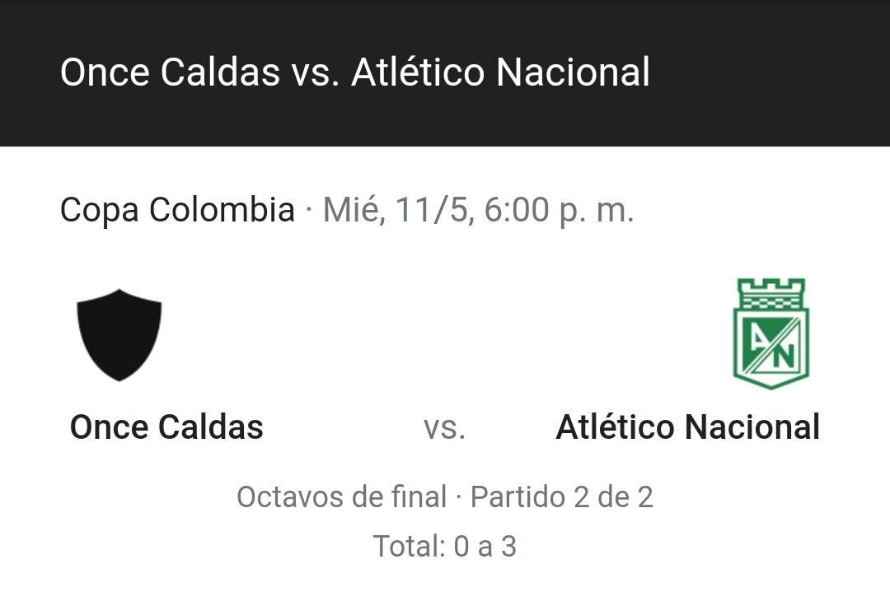

Registro
Próximo partido de Atlético Nacional
Historia de Atlético Nacional
El Atlético Nacional fue fundado oficialmente el 30 de abril de 1947, con el nombre de Club Atlético Municipal, por escritura pública n.º 2100 de la ciudad de Medellín y fue uno de los dos equipos aceptados por la Dimayor para que representara al Departamento de Antioquia en el naciente Campeonato Profesional de Fútbol a disputarse en 1948.Desde entonces, el equipo Verdolaga, conocido por apostar a la formación de jugadores colombianos, ha conseguido un total de treinta títulos oficiales, disgregados en dieciséis Ligas Dimayor, cinco Copas Colombia (siendo el más laureado en ambas competiciones), dos Superligas, dos Copas Merconorte, dos Copas Interamericanas, dos Copas Libertadores de América y una Recopa Sudamericana. Estos logros le dieron el mote de El Rey de Copas Colombiano.
Datos del Club
Maximos goleadores del club
VÍCTOR ARISTIZÁBAL – 207 GOLES JHON JAIRO TRÉLLEZ – 105 GOLES GUSTAVO SANTA – 101 GOLES HUMBERTO ÁLVAREZ – 99 GOLES OSWALDO PALAVECINO – 84 GOLES HUGO LÓNDERO – 73 GOLES HERNÁN DARIO HERRERA- 73 GOLES JUAN PABLO ÁNGEL – 72 GOLES JUAN JAIRO GALEANO – 67 GOLES JEFFERSON DUQUE – 63 GOLES .
Jugadores más campeones con Nacional
Franco Armani – 13 titulos Alexis Henríquez – 13 titulos Christian Vargas – 13 titulos(haciendo nada) Fariz Díaz – 12 titulos Alejandro Bernal – 12 titulos Francisco Nájera – 12 titulos Cristian Bonilla - 11 titulos Daniel Bocanegra – 10 titulos Macnelly Torres – 10 titulos Sebastian Peréz – 10 titulos .
Titulos internacionales del club
1989: su primera Copa Libertadores 1990: le ganó a Pumas, de México Su primera Merconorte en 1998 En el 2000 superó a Millonarios para una nueva Merconorte En 2016 gritó de nuevo campeón en la Libertadores El de Recopa a Chapecoense